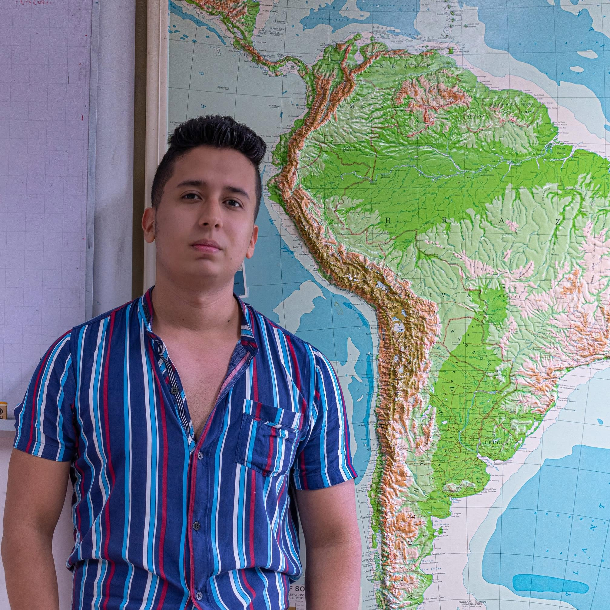
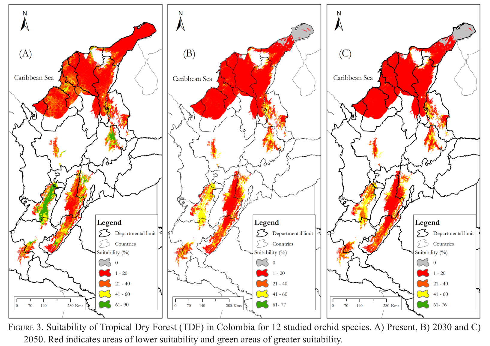
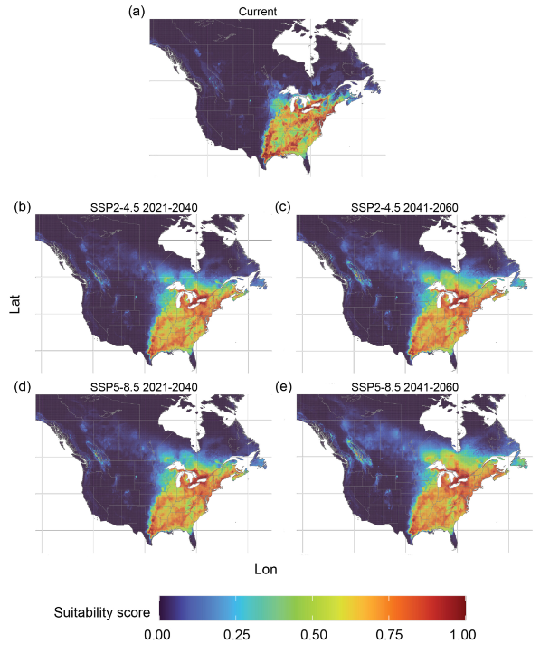

Transformo datos climáticos complejos en decisiones territoriales reales.
Geógrafo y científico de datos espaciales. Aplico modelos de distribución espacial, cartografía y estadística para la agricultura, el agua y la conservación frente al cambio climático — con código abierto, reproducible y documentado.
Sobre mí
Geógrafo con Maestría en Ciencias de Sistemas de Información Geográfica. Mi carrera se ha centrado en resolver una necesidad crítica: ¿cómo transformar la información geográfica en una herramienta de acción climática real para los territorios?
Como Asociado de Investigación Senior en un centro de investigación agrícola, he estructurado análisis metodológicos rigurosos junto a equipos multidisciplinarios: modelos de cambio y variabilidad climática, índices de sequía e inundación, análisis de deforestación y lineamientos técnicos para cadenas de valor sostenibles como el café y el cacao.
Basado en Cali, Colombia — disponible para proyectos internacionales y colaboraciones remotas.

Formación
- MSc, Ciencias de la Información GeográficaUniversidad de Salzburgo — Austria
- GeógrafoUniversidad del Valle — Colombia
Publicaciones científicas
Investigación revisada por pares sobre cambio climático, cultivos, biodiversidad y uso del suelo — publicada en revistas indexadas y disponible en detalle en mi perfil de Google Scholar.
Castro-Llanos, F., Hyman, G., Rubiano, J. et al. Climate change favors rice production at higher elevations in Colombia. Mitigation and Adaptation Strategies for Global Change, 24, 1401–1430.
doi.org/10.1007/s11027-019-09852-xReina-Rodríguez, G. A., Rubiano Mejía, J. E., Castro-Llanos, F. A., & Soriano, I. Orchid Distribution and Bioclimatic Niches as a Strategy to Climate Change in Areas of Tropical Dry Forest in Colombia. Lankesteriana, 17(1), 17–47.
dx.doi.org/10.15517/lank.v17i1.27999Gómez-Llano, J. H., Nava, D. E., Castro-Llanos, F., & Acevedo, F. E. Pest and Host Associations That Transcend Time: Assessing the Impact of Climate Change on Grape Berry Moth (Paralobesia viteana) and Its Hosts Vitis riparia and Vitis labrusca in North America. Ecology and Evolution, 15(12), e72612.
doi.org/10.1002/ece3.72612Manrique, H., Castro-Llanos, F., van Rompaey, A., & Honnay, O. Coca cultivation and deforestation in the Peruvian Amazon: A multiscale analysis using spatial regression models. Applied Geography, 184, 103742.
doi.org/10.1016/j.apgeog.2025.103742Schmidt, P. G., Castro-Llanos, F., Gutierrez, N., & Bunn, C. ACLIMATAR: Climate adaptation planning tool for cocoa, coffee and tea farming. Plataforma web.
adaptation.aclimatar.orgCapacidades clave
Flujos de trabajo que combinan rigor científico y transparencia técnica: scripts reproducibles y basados en literatura científica, que tu equipo puede validar, ejecutar y escalar de forma independiente.

Análisis agroclimático y aptitud de tierras
¿Dónde y cuándo son viables los cultivos bajo el cambio climático?
Modelado de idoneidad biofísica y escenarios futuros. Procesamiento de series de tiempo de alta resolución y análisis decadales para cultivos clave como el café y el cacao, incluyendo el nicho climático futuro de especies de flora y fauna.

Modelado geoespacial y tuberías de datos
¿Cómo convertir datos masivos en conocimiento reproducible para no expertos?
Flujos automatizados para el procesamiento de rasters y vectores, integrando datos socioeconómicos, ambientales, climáticos, de suelo y terreno. Programación aplicada a variables climáticas, interpolaciones y dinámicas territoriales.

Visualización de datos y divulgación científica
¿Cómo comunicar la ciencia espacial de forma ejecutiva?
Mapas interactivos, dashboards, aplicaciones web y documentación técnica clara — conectando la academia con la comunidad general a través de contenido especializado.
Herramientas y reproducción de código
Todo el código se construye bajo principios de ciencia abierta y reproducibilidad, siguiendo estándares académicos consecuentes.
R / RStudio / Positron
Uso intensivo del ecosistema geoespacial — terra, sf, leaflet, ggplot2 — para la manipulación avanzada de datos raster y vectoriales.
Python
Scripts robustos con rasterio, geopandas y matplotlib, según el caso de uso.
ArcGIS / QGIS
Amplias opciones para el diseño de cartografía temática cuando el proyecto lo requiere.
→ entregables: capas, mapas, visualizaciones, reportes técnicos y scripts fuente comentados en R para garantizar autonomía total del equipo.
Proyectos y contribuciones
Colaboración estrecha con equipos de investigación global e interdisciplinaria para el procesamiento de datos climático-espaciales de la plataforma Aclimatar, diseñada para apoyar la adaptación climática de pequeños agricultores de cacao, café y té. Desarrollo de modelos de machine learning (Random Forest) para identificar zonas idóneas de cultivo, y técnicas de desescalado climático (downscaling) para optimizar la resolución espacial de los modelos de cambio climático.
Participación activa en el proyecto regional ClimaLoca: modelamiento espacial para evaluar el impacto de estreses climáticos en zonas productoras de cacao de la región andina. El trabajo mapeó la vulnerabilidad de los sistemas de producción cacaotera y modeló la idoneidad futura de los cultivos, como insumo técnico para estrategias regionales de mitigación y adaptación.
Espacio de divulgación y educación donde comparto metodologías y tutoriales de programación en R aplicados a la geografía y ciencias afines, promoviendo la democratización del conocimiento geoespacial.
Capacitación especializada
Mentorías privadas, tutorías personalizadas y cursos en Udemy para fortalecer las capacidades técnico-investigativas de personas y equipos, cubriendo un portafolio de temáticas de vanguardia en ciencias de datos espaciales.
Análisis de datos y estadística aplicada — descriptiva, inferencia, pruebas de hipótesis y modelado para decisiones basadas en datos.
Fundamentos de geomática — sistemas de información geográfica (SIG) y cartografía temática avanzada.
Modelado ecológico y de cultivos — modelos de distribución de especies (SDM) con Random Forest, SVM y Máxima Entropía.
Análisis climático — downscaling, índices climáticos extremos y variabilidad/cambio climático.
Estadística espacial avanzada — autocorrelación espacial (Moran-LISA), Regresión Geográficamente Ponderada (GWR), Kernel Density Estimation.
Análisis territorial — métricas del paisaje, interpolación espacial (kriging, cokriging, IDW) y monitoreo de coberturas/deforestación.
Cursos en Udemy
Tres cursos en español sobre R aplicado a sistemas de información geográfica, análisis climático y modelado de especies — pensados para quienes parten desde cero.
Introducción a los SIG con R
Fundamentos de R aplicados al manejo, análisis y visualización de información espacial, desde cero.
Ver curso → R · ClimaAnálisis de datos climáticos con R
Descarga, procesamiento y análisis espacial de datos climáticos históricos y de proyecciones futuras.
Ver curso → R · SDMAnálisis espacial · Modelos de Distribución de Especies en R
Modelado de nichos climáticos de flora y fauna con Random Forest, MaxEnt y otros algoritmos.
Ver curso →¿Cómo podemos colaborar?
Asesoría personalizada, de la definición del alcance a la entrega final.
Definición de alcance
Conversamos sobre los objetivos de tu investigación o proyecto, los datos geoespaciales o climáticos disponibles y la viabilidad técnica.
Propuesta técnico-económica
Plan de trabajo detallado con entregables claros, metodologías sugeridas y cronograma.
Desarrollo y entrega
Recibes capas, mapas, visualizaciones, reportes técnicos y scripts fuente comentados en R — y, si se acuerda, videos explicando el código y la estructura de carpetas.
¿Buscas formación estructurada para ti o tu equipo?
Ofrezco mentorías privadas, tutorías personalizadas y acceso a mis cursos en Udemy — cubriendo desde estadística espacial avanzada hasta modelado ecológico y análisis climático.
Consultar disponibilidad →Hablemos de tu proyecto
Cuéntame sobre tus objetivos, tus datos y tu territorio — te respondo con la viabilidad técnica y los próximos pasos.